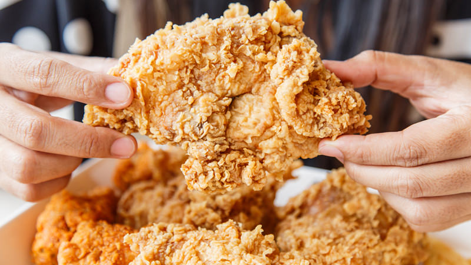
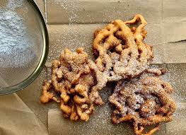
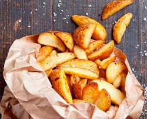
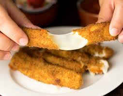

Hello! Thank you so much for your support.
Thanks to all of you, this blog just won our very first Annual Blog Competition!!
Next week we will be featuring Hell's Kitchen Gordon Ramsay.
Stick around for more!!
Dating back from the ancient Aryan era, our recipes and spices lead the world in taste.
We take recipes from the internet and try to put our own twists on them
Earlier this year we went to France and worked with a chef from a bakery to put an Indian twist to a pastry!
The food of this month is cottage cheese. Otherwise known as Paneer
|  |  |
|  |  |
Crisp, however the amount of oil made me a bit queasy.
Chicken was undercooked
Overall rating of 0.5/10
Completely underwhelming, would not reccomend